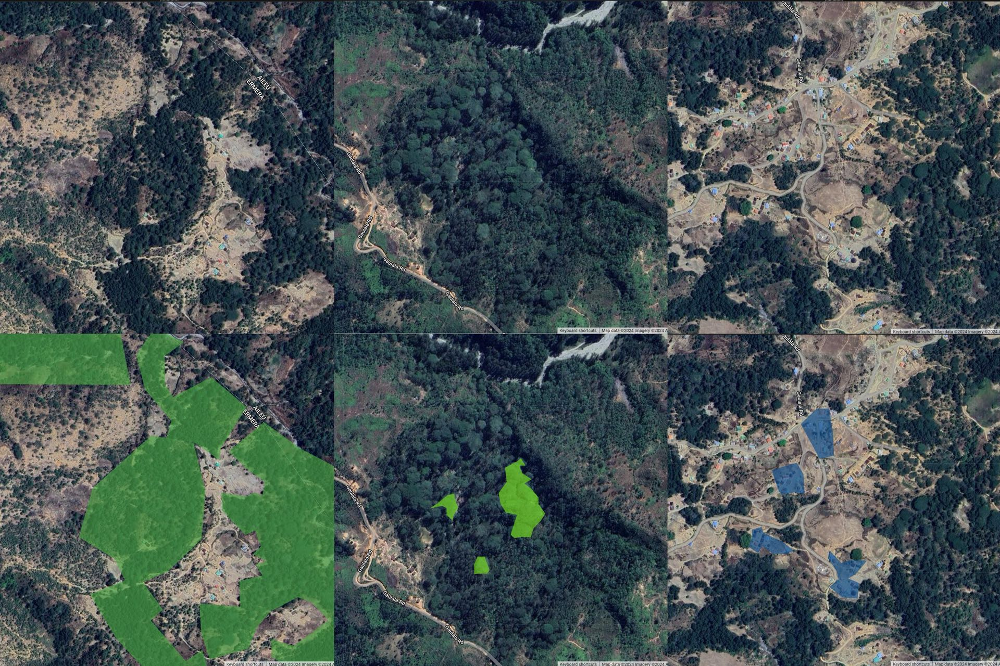

//1. Data preprocessing
var ermera = ee.FeatureCollection('users/yuqingvicky/ermera');
// specified time range
var start = '2022-01-01';
var end = '2023-01-01';
// Specify the band to use
var bands = ['B2', 'B3', 'B4', 'B5', 'B6', 'B7', 'B8', 'B8A', 'B11', 'B12'];
// Cloud cover: 1%
var sentinel = ee.ImageCollection('COPERNICUS/S2_SR')
.filter(ee.Filter.lt('CLOUDY_PIXEL_PERCENTAGE', 1))
.mean()
.select(bands)
var visParams = {
min: 0.0,
max: 3000,
bands: ['B4', 'B3', 'B2'],
opacity: 1
};Exploring the coffee growing areas in Ermera
1 Project Summary
This project aims to develop an application based on high-resolution and multi-temporal remote sensing technology to accurately identify and monitor suitable areas for Arabica coffee cultivation in the Ermera district of Timor-Leste. Through the use of vegetation indices such as NDVI, NDMI and satellite data, the specific effects of topographic and climatic factors such as slope, elevation and temperature fluctuations on coffee cultivation were studied in depth, and a Random Forest algorithm was used to categorise and identify cultivation areas. The project ultimately provides a monitoring and analysis platform for the agricultural sector in the Ermera region, supporting decision-making with scientific data and helping the sustainable development of the local coffee industry.
2 Introduction
2.1 Background
Timor-Leste, located in Southeast Asia, comprises a peninsula and several small islands near Australia. The region of Ermera, nestled in the mountainous west-central area of Timor Island and about 50 kilometers from Dili, boasts diverse microclimates and high altitudes ideal for coffee berry ripening, enhancing the beans’ flavor. Coffee farming dominates Ermera’s economy, providing livelihoods for most residents, generating substantial foreign exchange, creating jobs, and boosting Timor-Leste’s global coffee reputation.

2.2 Literature review
Coffee cultivation is extremely dependent on its specific geographic and climatic conditions, factors that directly affect coffee quality and yield (Bilen et al., 2023, Rahn et al., 2018). Adaptive management of shade, which is essential to mitigate temperature fluctuations due to climate change, not only helps to regulate temperature but also positively affects the local microclimate (Rahn et al., 2018). As climate change intensifies, suitable coffee-growing areas are expected to decrease, and failure to take adaptation measures will severely impact yields (Camargo, 2010; Bunn et al., 2015). Higher altitude areas may become new hotspots for coffee cultivation in the future (González-Orozco et al., 2024).
In addition, the application of artificial intelligence and remote sensing technologies can optimise agricultural resource management and improve coffee production and sustainability. Studies such as Oliphant et al. (2019) and Kelly et al. (2018) used random forest algorithms to accurately differentiate agricultural land and calculate area on a GEE platform, showing the potential of remote sensing and machine learning in precision agriculture.
3 Problem Statement
What are the most suitable locations for coffee growing in the Ermera region?
Objective: To develop an application based on high-resolution and multi-temporal remote sensing techniques to accurately identify and monitor changes in suitable areas for Arabica coffee cultivation in the Ermera region and the specific impact of topographic and climatic factors on them.
4 End User
Local agricultural departments
This application provides dynamic monitoring and detailed analyses of suitable areas for coffee cultivation, helping to make decisions based on scientific data and to ensure that resources are allocated appropriately. In order to address the specific challenges faced by local agricultural departments, we liaise with the heads of these departments to ensure that the solutions are tailored to their needs. By integrating a wide range of data such as altitude, surface temperature and topography, the app is able to more accurately predict areas suitable for coffee cultivation. In addition, it provides the agricultural sector with a scientific basis for planting, helping to centralise resources, increase production capacity and promote the development of the local industry.
5 Methodology

Additionally, by interviewing local coffee cultivation consultants, we collect essential information on coffee growing conditions like the impact of elevation, temperature, and slope. We also find out that local farmers favor planting Arabica coffee beans in dispersed patterns.
5.1 Data
NDVI： LANDSAT/LC08/C02/T1_L2: USGS Landsat 8 Collection 2 Tier 1 Raw Scenes
NDWI： LANDSAT/LC08/C02/T1_L2: USGS Landsat 8 Collection 2 Tier 1 Raw Scenes
NDMI： LANDSAT/LC08/C02/T1_L2: USGS Landsat 8 Collection 2 Tier 1 Raw Scene
DEM： JAXA/ALOS/AW3D30/V2_2: ALOS DSM: Global 30m v3.2
Temperature：MODIS/006/MOD11A2: MOD11A2.061 Terra Land Surface Temperature and Emissivity 8-Day Global 1km
Slope：USGS/SRTMGL1_003： NASA SRTM Digital Elevation 30m
6 Google Earth Engine Application
6.1 Data preprocessing
First, we restrict the time range to January 2022 through January 2023. Then, we specify the use of bands B2 to B4, and ensure that the cloud coverage is limited to only 1%.
Next, we will create a mask to identify areas suitable for coffee cultivation.
NDVI>0.2, ensure there is vegetation.
NDWI<0.3, to exclude river-like water bodies.
NDMI>0.2, ensure there is vegetation and a certain amount of moisture.
Dataset: LANDSAT/LC08/C02/T1_L2: USGS Landsat 8 Collection 2 Tier 1 Raw Scenes
//2. Create a basic mask for classification
// Create a basic vegetation and moisture mask (identifies areas that are both vegetated and non-water bodies. But vegetation here may include healthy and less healthy vegetation)
var ndvi = sentinel.normalizedDifference(['B8', 'B4']).rename('ndvi');
var ndwi = sentinel.normalizedDifference(['B3', 'B8']).rename('ndwi');
var ndmi = var ndmi = sentinel.normalizedDifference(['B8', 'B11']).gte(0.2).rename('ndmi');
var basicMask = ndvi.gte(0.2).and(ndwi.lt(0.3)); // Vegetated areas and non-water bodies, maintain low NDWI values to exclude water bodiesThen set the range of landform features suitable for coffee growth. Elevation: 700-1900 meters Temperature: 15-24 degrees Celsius Slope: 5-20 degrees
// Create a combined mask based on NDVI, NDMI, slope, and temperature
var suitableMask = basicMask.and(ndmi)).and(slopeMask).and(tempMask).and(elevationMask);
// Apply the mask to the Sentinel-2 image
var suitableImage = sentinel.updateMask(suitableMask);6.2 Function 1 : View Area Changes
This section aims to understand the coffee planting situation in Ermera over the past five years.
After clicking the first button, the panel displays a timeline. Below, the line chart shows the total area of coffee already planted each year and the total area suitable for planting.
var model_training = function(start, end){
//... ...
// Train a random forest model using training data
var model = ee.Classifier.smileRandomForest(500).train(training, 'class');
// Apply the model on the complete Sentinel image
var prediction = basicImage.classify(model);
//... ...
}
For instance, to examine the distribution of already planted coffee areas in 2019, clicking the ‘2019’ time coordinate will slowly reveal blue spots on the map. This detection process involves passing the time from the slider to a random forest algorithm model, which trains on the MultiPolygon dataset marked for that time, and returns the detected layers of coffee-planted areas.
// Define time range list
var years = ee.List.sequence(2018, 2024);
var generateCoffeePrediction = function(start,end) {
// Using the Sentinel-2 image set
var sentinel = ee.ImageCollection('COPERNICUS/S2_SR')
.filterDate(start, end)
.filter(ee.Filter.lt('CLOUDY_PIXEL_PERCENTAGE', 1))
.mean()
.select(bands);
// Place your appropriate masks and other relevant code here
var coffeePrediction = model_training(start,end);
// Return coffeePrediction layer
return coffeePrediction.clip(ermera);
};The chart provides area data for each year. Hovering over a specific time coordinate reveals that the total area of planted coffee fluctua
6.3 Function 2: Visualization and Area Calculation of Suitable Coffee Planting Regions
This feature is designed to display the geographical distribution of areas suitable for coffee planting in the Ermera in 2022. Users can visually identify which areas are most suitable for coffee cultivation, select specific regions on the map, and gain the calculation result of areas within.
6.3.1 Enable users to self-select areas of interest
This feature allows the user to draw rectangles they are interested in on the layer.
//Here you need to add the function function - check the wk8 ward statistics to see how to follow the regional statistics
var draw = ui.Button({
label: 'Draw AOI',
style:{stretch: 'horizontal'},
onClick: function() {
//console.clear();
//console.add(header);
// Clearing and setting up drawing tools
Map.drawingTools().clear();
Map.drawingTools().setLinked(false);
Map.drawingTools().setShape('rectangle');
Map.drawingTools().draw();
// Handling events after drawing is complete
// Configuring drawing tools in button click events
Map.drawingTools().onDraw(function(event) {
calculateAndDisplayArea(); // Calculate and display area
});
}
})
6.3.2 Customised land area calculation with real-time feedback function
Based on the previously drawn rectangles, the system will automatically calculate the area of land suitable for planting in the region and show the result on the interactive interface.
function calculateAndDisplayArea() {
var AOI = Map.drawingTools().layers().get(0).toGeometry();
var suitable2 = suitableImage.select('B2').gt(0).multiply(ee.Image.pixelArea()).divide(10000);
var result = suitable2.reduceRegion({
reducer: ee.Reducer.sum(),
geometry: AOI,
scale: 10, // Use of appropriate scales
maxPixels: 1e12 // Maximum number of pixels
});
var totalResult = ee.Number(result.get('B2')).round();
// Create Title
var header = ui.Label({
value: "Available area for planting coffee (hectare):",
style: {fontWeight: 'bold', margin: '10px 5px'}
});
console.add(header);
var area_sumLabel = ui.Label({
value: 'Calculating...',
style:{padding:'0px 50px'}
})
totalResult.evaluate(function(val){
area_sumLabel.setValue(val)
});
var results=ui.Panel({
widgets: [area_sumLabel],
layout: ui.Panel.Layout.Flow('horizontal')
})
console.add(results)
}6.3.3 Reset box-select operations and results
Allows the user to reset previously drawn rectangles and calculation results.
var clear = ui.Button({
label: 'Clear',
style:{stretch: 'horizontal'},
onClick: function() {
resetMap();
}
});6.4 Function 3: Landuse Layers Visualisation
This feature allows users to quickly display interested layers or remove them to explore the distribution of different land uses distribution classified by the Random Forest model.
var checkbox_basic = ui.Checkbox({
label: 'Ermera areas',
onChange: function(checked) {
// If the tick box is ticked
if (checked) {
// Add a single band layer to the map
Map.addLayer(basicImage.clip(ermera), visParams, 'Ermera areas');
} else {
// If unchecked, remove layer from map
var layers = Map.layers();
for (var i = 0; i < layers.length(); i++) {
var layer = layers.get(i);
if (layer.getName() === 'Ermera areas') {
Map.remove(layer);
}
}
}
}
}); 7 Interaction Design
In the process of UI design, we considered five principles of UI design:
- Usability: Our UI design provides an intuitive user interface, the right panel and the fixed legend in the lower left corner are easy to understand and operate.
- Accessibility: We took into account the colour barrier of red-green colour blindness and avoided using both red and green colours together.
- Aesthetics: the layout of the three functions is clear, and the visual hierarchy improves comfort. Consistency: Attention to detail ensures that the layer colours are consistent within each function.
- Flexibility: The UI has a certain degree of flexibility and scalability to cope with different user needs and system changes.
8 Limitations
- The study area is limited in scope and is specific in that only one area, Ermera, was selected.
- Coffee recognition is relatively complex and recognition accuracy needs to be improved.
- Because of the complexity of environmental and social factors, suitability for cultivation is not only influenced by the environment, but also by local laws and policies.
9 Future work
- Expand the identification area - expand the area of application of the project.
- Expand the identification of more coffee species - such as Robusta, which is also grown in Timor-Leste.
- Improve image resolution - consideration - could be given to incorporating high resolution images taken by drones to improve identification accuracy.
10 References
Camargo, M. B. P. de. (2010). ‘The impact of climatic variability and climate change on arabic coffee crop in Brazil’. Bragantia. Instituto Agronômico de Campinas, 69, pp. 239–247. doi: 10.1590/S0006-87052010000100030.
Davis, A. P., Gole, T. W., Baena, S. and Moat, J. (2012). ‘The Impact of Climate Change on Indigenous Arabica Coffee (Coffea arabica): Predicting Future Trends and Identifying Priorities’. PLOS ONE. Public Library of Science, 7 (11), p. e47981. doi: 10.1371/journal.pone.0047981.
González-Orozco, C. E., Porcel, M., Byrareddy, V. M., Rahn, E., Cardona, W. A., Velandia, D. A. S., Araujo-Carrillo, G. A. and Kath, J. (2024). ‘Preparing Colombian coffee production for climate change: Integrated spatial modelling to identify potential robusta coffee (Coffea canephora P.) growing areas’. Climatic Change, 177 (4), p. 67. doi: 10.1007/s10584-024-03717-2.
Kelley, L. C., Pitcher, L. and Bacon, C. (2018). ‘Using Google Earth Engine to Map Complex Shade-Grown Coffee Landscapes in Northern Nicaragua’. Remote Sensing. Multidisciplinary Digital Publishing Institute, 10 (6), p. 952. doi: 10.3390/rs10060952.
Oliphant, A. J., Thenkabail, P. S., Teluguntla, P., Xiong, J., Gumma, M. K., Congalton, R. G. and Yadav, K. (2019). ‘Mapping cropland extent of Southeast and Northeast Asia using multi-year time-series Landsat 30-m data using a random forest classifier on the Google Earth Engine Cloud’. International Journal of Applied Earth Observation and Geoinformation, 81, pp. 110–124. doi: 10.1016/j.jag.2018.11.014.
Oliveira, M. F. de, Santos, A. F. dos, Kazama, E. H., Rolim, G. de S. and Silva, R. P. da. (2021). ‘Determination of application volume for coffee plantations using artificial neural networks and remote sensing’. Computers and Electronics in Agriculture, 184, p. 106096. doi: 10.1016/j.compag.2021.106096.
Rahn, E., Vaast, P., Läderach, P., van Asten, P., Jassogne, L. and Ghazoul, J. (2018). ‘Exploring adaptation strategies of coffee production to climate change using a process-based model’. Ecological Modelling, 371, pp. 76–89. doi: 10.1016/j.ecolmodel.2018.01.009.